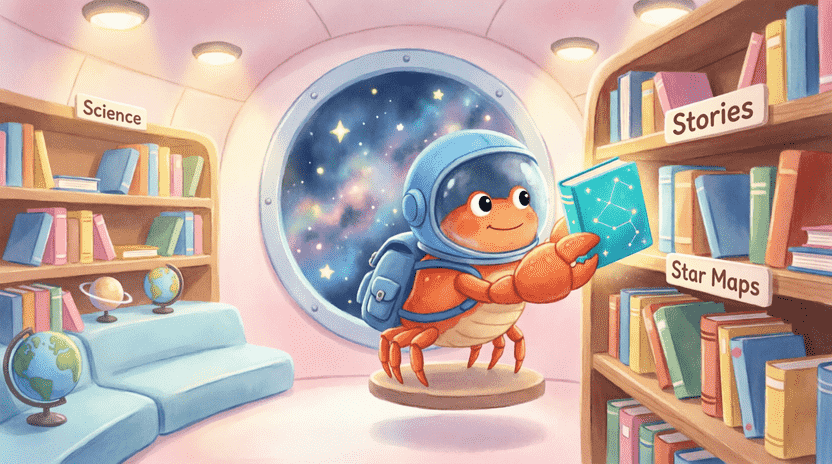
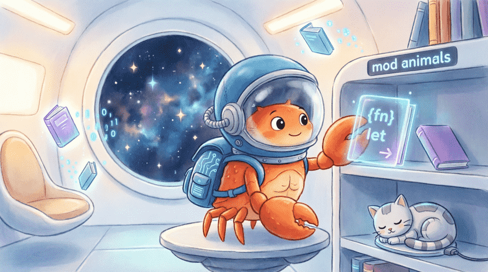

🦀 The Land of Rust: Ferris the Crab’s Space Adventures
Chapter 7: The Big City Library (Modules & Files)
📋 Chapter Outline:
7.1. The Library Got Too Messy!
7.1.1. The Story: Ferris’s Disorganized Library
Ferris loves reading. He has a huge library aboard his spaceship. At first, he just piled all his books onto one big table. 📚📖
But soon, the number of books grew, and the library started looking like a junkyard! Every time he wanted to find “The Galaxy Encyclopedia,” he had to dig through piles of papers for hours.
Finally, Ferris decided to organize it. He built separate shelves: one for science books, one for stories, one for star maps, and one for space cookbooks! Now everything has its place, and finding a book is as easy as pie! 💧
7.1.2. The Problem: Everything in One File
In programming, the exact same thing happens. Until now, we’ve been writing all our code in a single file called main.rs. For our Guess-the-Number game (which was about 50 lines), that was perfectly fine.
But imagine you’re writing a big game like Minecraft! Thousands of lines of code, hundreds of functions, and countless variables! If you put them all in one file, finding a single line becomes like finding a needle in a haystack! 😵💫
On top of that, if multiple people work together, they’d all be editing the same file, which quickly causes conflicts and confusion.
7.1.3. Introducing Modules as Shelves
In Rust, the solution is to use Modules. A module is exactly like a separate bookshelf. Each shelf can hold its own special code.
Modules do three amazing things for us: 🔹 Organization: Groups code into neat, logical categories. 🔹 Privacy: Lets us hide certain code so no one from the outside can accidentally change it. 🔹 No Conflicts: Two different modules can have functions with the exact same name without mixing them up!
![[Illustration: Educational illustration of Ferris the crab standing in a messy spaceship room full of scattered books. On the right side, a clean, organized bookshelf with labeled shelves (Science, Stories, Maps) is shown. Ferris is happily placing a book on the correct shelf. Style: vibrant children’s book, clean lines, soft lighting, 16:9.]](assets/images/7.1.png)
7.2. Building Shelves (mod)
7.2.1. Defining a Module in a File
The easiest way to create a shelf (module) is using the mod keyword. We can even define it directly inside main.rs:
mod animals {
pub fn bark() {
println!("Woof!");
}
pub struct Dog {
pub name: String,
}
}
fn main() {
// Using a function inside the module
animals::bark();
// Creating a dog
let my_dog = animals::Dog {
name: String::from("Rexy"),
};
println!("My dog's name: {}", my_dog.name);
}Notice the word pub (short for public). Anything we want to use from outside the module must be marked pub. Otherwise, it stays private and can only be used inside that module.
7.2.2. Calling Functions from a Module
To access something inside a module, we use the :: symbol (double colon).
For example, animals::bark() means: “Go to the animals shelf and find the bark function, then run it!” 🐕
7.2.3. Nested Modules
We can put modules inside other modules, just like stacking boxes inside bigger boxes:
mod house {
pub mod kitchen {
pub fn cook() {
println!("Cooking in the kitchen!");
}
}
pub mod living_room {
pub fn watch_tv() {
println!("Watching TV in the living room!");
}
}
}
fn main() {
house::kitchen::cook();
house::living_room::watch_tv();
}7.2.4. Moving Modules to Separate Files
When modules grow, they no longer fit nicely inside main.rs. It’s much better to give each module its own file!
Here’s how:
- Create a new file next to
main.rs(inside thesrcfolder) with the exact same name as the module and a.rsextension. - Write the module’s content inside it (without the
modkeyword). - In
main.rs, simply write:mod animals;
📂 File src/animals.rs:
#![allow(unused)]
fn main() {
pub fn bark() {
println!("Woof!");
}
pub struct Dog {
pub name: String,
}
}📂 File src/main.rs:
mod animals; // This tells Rust to find and read animals.rs!
fn main() {
animals::bark();
}Rust is smart enough to automatically find animals.rs when you write mod animals;. So clean and tidy! 🧹✨
7.2.5. Exercise: Math Modules
Create a new project (cargo new math_modules). Create two modules in separate files: math and strings.
mathmodule:addandsubtractfunctions.stringsmodule:to_uppercaseandto_lowercasefunctions. Then use all of them inmain.rs.

7.3. The Library’s Lock (Privacy)
7.3.1. Private by Default
In Rust, we have a golden rule: Everything is private by default! 🔒 Think of it like a diary. Would you let just anyone open it and read your secrets? No! You decide exactly which pages to share.
7.3.2. Making Things Public with pub
To let other parts of your program see or use something, you must attach the pub label to it:
#![allow(unused)]
fn main() {
mod my_module {
pub fn public_function() {
println!("Everyone can see me!");
}
fn private_function() {
println!("Only this module can see me.");
}
}
}7.3.3. Private Fields in Structs
Even if a struct itself is public, its inner fields (like name or power) are private by default!
This is actually a wonderful thing because it lets us control how information changes. For example, in a game, players shouldn’t be able to directly change their hero’s health to 999. Instead, they must use a heal() function that checks if they actually drank a potion first.
7.3.4. Why Privacy Matters
🔹 Safety: Prevents accidental or unauthorized changes. 🔹 Simplicity: Users only interact with what they need, avoiding confusion. 🔹 Flexibility: You can completely change how the private code works inside, without breaking anyone else’s program (as long as the public names stay the same).
7.3.5. Exercise: The Bank Module
Create a bank module that manages a bank account. It should have an Account struct where the balance field is private.
Write public methods: new (starting balance), deposit, and withdraw (checks if there’s enough money before subtracting).
💡 Sample Answer:
#![allow(unused)]
fn main() {
pub struct Account {
balance: u32,
}
impl Account {
pub fn new(initial_balance: u32) -> Account {
Account { balance: initial_balance }
}
pub fn deposit(&mut self, amount: u32) {
self.balance += amount;
}
pub fn withdraw(&mut self, amount: u32) -> bool {
if amount <= self.balance {
self.balance -= amount;
true
} else {
false
}
}
pub fn get_balance(&self) -> u32 {
self.balance
}
}
}
7.4. Library Shortcuts (use & as)
Sometimes writing the full address (house::kitchen::cook()) gets very long!
With the use keyword, we can bring a function right to our desk, exactly like taking a book off the shelf and placing it in front of us.
7.4.1. Bringing Functions with use
mod animals {
pub mod dog {
pub fn bark() {
println!("Woof!");
}
}
}
use crate::animals::dog::bark;
fn main() {
bark(); // No need to write the long address anymore!
}(💡 Quick note: crate simply means “from the root of our current project.”)
7.4.2. Renaming with as
What if we have two functions with the exact same name from different modules? They would clash!
To solve this, we use as to give them nicknames:
#![allow(unused)]
fn main() {
use animals::dog::bark as dog_bark;
use animals::cat::speak as cat_speak;
}💡 Tip: as is super handy when you want shorter or clearer names for your imports.
For now, these two uses of use are all you need. As you grow as a programmer, you’ll learn more advanced ways, but for now, just remember: use keeps your code clean and easy to read!
![[Illustration: A cartoon map showing a path from “crate” root to a function. A magnifying glass focuses on a shortcut sign labeled “use”. Ferris is walking a shorter path thanks to the shortcut. Style: playful vector illustration, clear educational graphic, 16:9.]](assets/images/7.4.png)
7.5. Project: Rebuilding Guess-the-Number with Modules
Now let’s rebuild our Guess-the-Number game (from Chapter 2) using modules, and see how much cleaner and more professional it becomes!
7.5.1. Project Structure
First, let’s organize our files inside the src folder:
src/
├── main.rs
├── input.rs // Handles getting input from the user
├── random.rs // Handles generating the random number
└── game_logic.rs // Handles comparison and game rules
(Don’t forget to add rand = "0.8.5" to your Cargo.toml!)
7.5.2. Module input (src/input.rs)
This file’s only job is to get a clean number from the user. If they type something wrong, it politely asks again.
#![allow(unused)]
fn main() {
use std::io;
pub fn read_number() -> u32 {
loop {
println!("Please guess a number:");
let mut input = String::new();
io::stdin().read_line(&mut input).expect("Failed to read");
match input.trim().parse() {
Ok(num) => return num,
Err(_) => println!("Only numbers, please!"),
}
}
}
}7.5.3. Module random (src/random.rs)
We generate the secret number here.
#![allow(unused)]
fn main() {
use rand::Rng;
pub fn generate_secret() -> u32 {
rand::thread_rng().gen_range(1..=100)
}
}7.5.4. Module game_logic (src/game_logic.rs)
Here we handle comparisons. We’ll also create an enum to hold the game’s state.
#![allow(unused)]
fn main() {
pub enum GuessResult {
TooLow,
TooHigh,
Correct,
}
pub fn check_guess(guess: u32, secret: u32) -> GuessResult {
if guess < secret { GuessResult::TooLow }
else if guess > secret { GuessResult::TooHigh }
else { GuessResult::Correct }
}
pub fn get_message(result: &GuessResult) -> &'static str {
match result {
GuessResult::TooLow => "⬆️ Too low! Go higher!",
GuessResult::TooHigh => "⬇️ Too high! Go lower!",
GuessResult::Correct => "🏆 You got it!",
}
}
}(💡 Note: &'static str is Rust’s way of saying “a fixed text that lives for the entire program”. Perfect for short, unchanging messages like these!)
7.5.5. File main.rs
Look how clean and readable main.rs is now!
mod input;
mod random;
mod game_logic;
use game_logic::GuessResult;
fn main() {
println!("🎲 Welcome to Guess the Number! 🎲");
let secret = random::generate_secret();
let mut count = 0;
loop {
let guess = input::read_number();
count += 1;
let result = game_logic::check_guess(guess, secret);
println!("{}", game_logic::get_message(&result));
if let GuessResult::Correct = result {
println!("✨ You won in {} tries! ✨", count);
break;
}
}
}No more scrolling through 100 lines of mixed code! Each file does exactly one job. 😎
![[Illustration: A cartoon folder tree structure showing src/ folder with four glowing files: main.rs, input.rs, random.rs, game_logic.rs. Arrows connect them showing how modules interact. Ferris stands beside giving a thumbs up. Style: clean infographic, educational, bright colors, 16:9.]](assets/images/7.5.png)
7.6. Summary & Challenge
7.6.1. What You Learned
In this chapter, you discovered:
✅ Modules (mod): Divide code into small, organized sections.
✅ pub: Makes functions or variables visible outside their module (otherwise, they stay private).
✅ Files: Modules can live in separate .rs files.
✅ use: Shortens long paths to items.
✅ as: Renames imports to avoid name clashes.
7.6.2. Challenge: shapes Crate
Create a new project named shapes.
Make two modules in separate files: circle and rectangle.
Each should have two functions: area and perimeter.
- Circle: radius
r. (Area: π × r², Perimeter: 2 × π × r) - Rectangle: length
aand widthb. (Area: a × b, Perimeter: 2 × (a + b))
In main.rs, call these functions and print the results for a circle with radius 5 and a rectangle of 4×7.
💡 Sample Answer (circle.rs):
#![allow(unused)]
fn main() {
pub fn area(radius: f64) -> f64 {
std::f64::consts::PI * radius * radius
}
pub fn perimeter(radius: f64) -> f64 {
2.0 * std::f64::consts::PI * radius
}
}Now you’re a real programmer who knows how to manage large projects! 🏗️ In the next chapter, we’ll dive into Collections (Vectors and Hash Maps): magical boxes that can grow, shrink, and hold tons of data! 📦✨
![[Illustration: Ferris the crab wearing a graduation cap, holding a glowing badge “Chapter 7 Master”. Background shows a well-organized file cabinet with labels “mod”, “pub”, “use”. Floating icons of Rust files and folders surround him. Style: encouraging, vibrant children’s book, 16:9.]](assets/images/7.6.png)